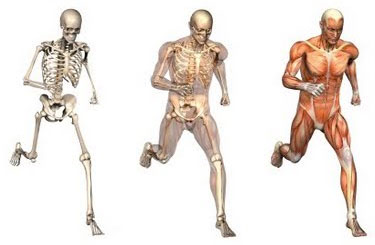
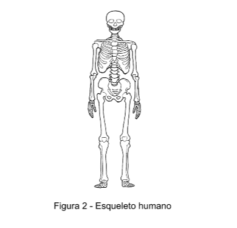

Sistema Locomotor
O sistema responsável pelo movimento do seu corpo.

Índice
Introdução
Ossos
Articulação
Classificações
Músculos
Classificações
Introdução
A locomoção só é possível devido a união dos sistemas que agem em conjunto: o sistema esquelético (ver figura 2), formado pelos ossos e articulações, e o sistema muscular, permitindo a contração e o relaxamento no momento da movimentação.
Ossos
São órgãos pertencentes ao sistema locomotor, constituídos de células ósseas, são duros e resistentes e, quando associados às articulações, constituem o esqueleto. Os ossos têm função de fixação muscular (músculo estriado), proteção de órgãos (circundando cavidades) e hematopoese (processo de renovação das células sanguíneas). A Osteologia é a ciência que estuda os ossos.
Os ossos também possuem uma medula óssea, sendo esta de dois tipos: a rubra ou vermelha, presente em todos os ossos do feto, no adultos, está presente nas auréolas de ossos largos (costela e esterno) e na epífise dos ossos longos (fêmur), e a medula flava ou amarela, presente em toda totalidade dentro das cavidades ósseas de um adulto.
Em sua estrutura histológica, os ossos possuem:
-
Substância óssea compacta: Com lâminas (trabéculas) ósseas, aplicadas umas as outras sem cavidades intermediárias.
-
Substância óssea esponjosa: Com lâminas dispostas em diferentes osições, deixando espaços entre os quais se encontra a medula óssea.
-
Periósteo: Tecido que envolve toda extensão do osso, exceto nas uperfícies articulares, permite o crescimento em espessura e a proteção do osso.
Quanto as dimensões, os ossos se encontram classificados em:
-
Ossos Longos: O comprimento excede a largura e a espessura, nas epífises destes ossos encontra-se a substância óssea esponjosa. Ex: Fêmur.
-
Ossos Largos: O comprimento, a largura e a espessura se equivalem. Nos ossos curtos, substância esponjosa é revestida por substância óssea compacta. Ex: ossos do carpo e do tarso.
-
Ossos Curtos: O comprimento, a largura e a espessura se equivalem. Nos ossos curtos, substância esponjosa é revestida por substância óssea compacta. Ex: ossos do carpo e do tarso.
-
Ossos irregulares: Não obedecem às três dimensões. Na sua superfície externa apresentam saliências, depressões e orifícios. Ex: vértebras, ilíacos, sacro, etmóide, esfenóide.
-
Ossos pneumáticos: Apresentam cavidades onde circulam ar. Ex: zigomático, frontal, maxilares e temporal.
O número de ossos no ser humano varia de acordo com seu desenvolvimento. Em um recém-nascido, encontramos aproximadamente 270 ossos, isso porque em muitos as epífises dos ossos longos ainda não se uniram às diáfises. No entanto, em um indivíduo de 35 anos, possui no corpo cerca de 206 ossos devido ao processo de fusão de alguns deles.

O esqueleto humano é dividido em duas partes: uma fixa, chamada de esqueleto axial e outra associada ao mesmo chamada de esqueleto apendicular.
- Esqueleto axial: é formado por cabeça, pescoço e tronco, ossos do centro do corpo. Possui 80 ossos.
-
-Cabeça: Possui 28 ossos (14 ossos no crânio e 14 ossos na face), divididos em crânio e face. O crânio tem os ossos firmemente unidos para proteção do encéfalo.
-
-No pescoço: Encontramos o osso hióide.
-
-Na coluna vertebral: Encontram-se 26 vértebras: 7 na região cervical, 12 na torácica, 5 lombar, 1 sacro (fusão de 5 vértebras), 1 cóccíx (fusão de 4 a 5 vértebras).
-
-Tórax: Apresenta 25 ossos: 12 pares de costelas (7 pares de costelas verdadeiras, 3 pares de costelas falsas e 2 pares de costelas flutuantes) e o osso esterno.
- Esqueleto apendicular: encontra-se na periferia do corpo; formado por membros superiores e inferiores. Possuem 126 ossos.
-
-Membros superiores: Possui 64 ossos (porção fixa – raiz e uma porção livre formado por: braço, antebraço e mão).
-
check Ombro (Raiz): Escápula e clavícula (osso que mais sofre fraturas).
-
check Braço (Porção Livre): Úmero.
-
check Antebraço(Porção Livre): Úmero.
-
check Mão: Ossos do carpo, metacarpos e Falanges.
-
-Membros inferiores: 62 ossos (porção fixa – raiz e porção livre – coxa, perna e pé). O número de ossos varia entre a criança, o adulto e o idoso. Nas crianças há maior número de ossos que com o tempo vai diminuindo, isso 6 acontece porque os ossos sofrem um processo chamado sinostose (soldadura), exemplo dos ossos da sutura da cabeça, ossos supranumerários (suturais e sesamóides).
-
check Osso do quadril (Raiz): osso ilíaco, se divide em: ílio, púbis e ísquio.
-
check Coxa (Porção livre): fêmur (Maior osso do corpo).
-
check Perna (Porção livre): tíbia (medial – perna) e fíbula (lateral – perna).
-
check Pé: 26 ossos. Calcâneo, tálus, cubóide, navicular, cuneiformes lateral, intermédio e medial. Além de 5 ossos metacarpianos e 14 falanges.
Observações: No envelhecimento, ocorre a perda de cálcio e os ossos ficam mais porosos, podendo causar a osteoporose se não houver a reposição de cálcio. Fratura de ossos longos na criança é de fácil soldadura porque o metabolismo da criança em distribuição de cálcio é maior o que permite a regeneração, no entanto é extremamente séria quando envolve a cartilagem epifisária devido a intensa atividade mitótica e para calcificação do osso e união às diáfises.
Articulação
É a junção entre os ossos por tecido fibroso ou cartilaginoso. Responsáveis pelos movimentos, amortecedor de choques e manutenções da postura do corpo. São elementos do sistema locomotor:
Articulações nos ossos longos: nas extremidades, ou seja, pelas epífises.
Articulações nos ossos largos: pelas bordas.
Articulações nos ossos curtos: pelas faces.
A nomenclatura é vinculada ao nome dos ossos. E alguns exemplos são: articulação entre o osso temporal e o parietal – articulação têmporo-parietal. Com exceção de algumas suturas do crânio que não obedecem a esta nomenclatura, sendo elas: Sutura sagital (articulação entre dois ossos parietais); Sutura coronal (entre o frontal e os dois parietais); Sutura Lambdóide (entre o occipital e os dois parietais); Sutura metópica (entre peças do osso frontal no recém-nascido).
O osso frontal não está totalmente ossificado no recém-nascido, pois esta não ossificação facilita a passagem pelo canal vaginal e permanece até os 18 ou 24 meses, podendo chegar até 6 anos.
A articulação pode ser entre dois ossos ou mais, assim como a articulação do joelho (une quatro partes ósseas: o fêmur, a patela, tíbia e fíbula), e a articulação do cotovelo (une três peças: Úmero, rádio e ulna).
- Assim como os ossos, as articulações possuem classificações:
-
- Quanto ao tempo: temporárias e permanentes
-
- De acordo com o tecido entre os ossos:
-
Fibrosas compostas por tecido fibroso e são articulações quase imóveis. São as suturas: serrátil (sutura sagital, entre os ossos parietais), escamosa (entre o parietal e o temporal) e plana (sutura internasal, entre os ossos nasais); as gonfoses: entre dente e alvéolos; e as sindesmoses: entre rádio e cúbito (membro superior), fíbula e tíbia (membro inferior).
-
Cartilaginosas compostas por tecido cartilaginoso, esta cartilagem pode ser hialina ou fibrocartilagínea e apresentam poucos movimentos de deslizamento. São as sincondrose: formada de cartilagem hialina e encontra-se na epífise dos ossos longos, é uma articulação temporária; e a sínfise é fibro- cartilagínea e temos como exemplo a sínfise púbica, é uma articulação permanente).
-
Sinoviais (são móveis e compostas de vários elementos situados entre os ossos, isto é dentro da cápsula articular. São cavidades cheias de líquido denominado líquido sinovial).
-
- Os anexos cartilagíneos (ver figura 3), de fibrocartilagem: a orla, que serve para aumentar o contato entre as superfícies (ombro); o disco (cabeça) e o menisco (joelho) para diminuir os choques mecânicos.
Observações: Em situações normais, muitas articulações atuam sem apresentar problemas ao longo da vida, elas estão adaptadas a resistir às compressões e forças de tensões. No entanto, pode ocorrer entorses que é o rompimento parcial dos ligamentos, ou luxações que é o rompimento total do ligamento, comprometendo a articulação.
Músculos
Os músculos propiciam o movimento através de sua capacidade de contração e relaxamento. São compostos pelas células musculares denominadas de fibras musculares, sendo eles os elementos ativos do sistema locomotor. Divididos um músculo em corpo ou ventre e tendões de inserção (cabeça/cauda), que servem para a fixação dos músculos nas articulações, pele ou ossos (ver figura 4).
Os principais tipos de tecido muscular são:
Tecido muscular liso: Presente nas vísceras, não têm movimentos, são involuntários.
Tecido muscular estriado cardíaco: Presente no miocárdio (músculo do coração).
Tecido muscular estriado esquelético: Presente em vários músculos do corpo, por exemplo nos músculos dos membros, tem movimentos voluntários.
Os músculos possuem algumas classificações, sendo estas de acordo com as suas dimensões, o número de cabeça, de ventre e de cauda, e de acordo com o movimento que os mesmos executam. Abaixo segue a os detalhes dessa classificação quanto a (o):
-
- Quanto ás Dimensões:
-
- Longos: seu comprimento é maior que a largura e espessura, predominam nos membros superiores e inferiores (Ex: sartório). Podem ser: cônicos, fusiformes e cilíndricos.
-
- Largos: Seu comprimento e largura se equivalem, superando a espessura. É encontrado circundando cavidades (ex: reto do abdome). Podem ser: triangulares, quadrangulares e romboides.
-
- Curtos: As três dimensões se equivalem. São encontrados nos locais que necessitam de maior resistência, maior tração, maior força como os músculos da mastigação (ex: masseter).
-
- Circulares: (Orbicular do olho e orbicular da boca) e intermediários.
-
- Quanto ao número de cabeças:
-
- Bíceps: Possui duas cabeças. Ex: Bíceps braquial e bíceps femural.
-
- Tríceps: Possui três cabeças: Tríceps braquial.
-
- Quadríceps: Possui quatro cabeças.
-
- Quanto ao número de ventres:
-
- Monogástrico: Apresenta somente um ventre. Presente em 99% dos músculos.
-
- Digástrico: Apresentam dois ventres unidos por um tendão intermediário.
-
- Poligástrico: Apresentam vários ventres unidos por tendões intermediários.
-
- Quanto ao número de caudas:
-
- Monocaudados: Apresentam somente uma cauda.
-
- Multicaudados: Apresentam de três a quatro caudas.
-
- Quanto ao ao movimento que realiza:
-
- Agônicos: Executa o movimento que se deseja (a favor do movimento).
-
- Antagônicos: Tem posição oposta ao antagonista, no entanto auxilia-o (contra o movimento).
-
- Fixadores: Fixa a articulação que antecede a que está sendo movimentada.
-
- Sinergistas: Fixa a articulação atravessada pelo agonista, auxilia-o evitando movimentos desnecessários.
Observações: Em condições normais, os músculos esqueléticos sempre apresentam umas poucas fibras estimuladas a contrair. Quando essas fibras relaxam, outras se contraem em seu lugar, de modo que o músculo apresenta um estado permanente de atividade ou tensão muscular, conhecido como
tônus muscular, responsável pela firmeza dos músculos e importante na manutenção da postura do corpo.